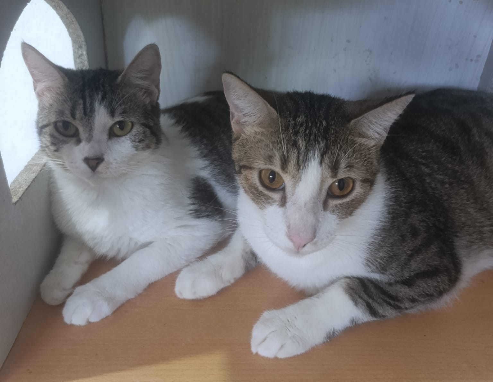

Apoya desde El Salvador
También podemos coordinar la entrega de tu donación en el lugar que nos indiques, según disponibilidad y ubicación.
Coordinar por WhatsApp
Cada aporte sostiene la alimentación, la atención veterinaria y el bienestar diario de más de 60 animales. Tu ayuda también permite mantener el hogar que los protege y continuar nuestras rutas solidarias.
También podemos coordinar la entrega de tu donación en el lugar que nos indiques, según disponibilidad y ubicación.
Coordinar por WhatsAppAteos, La Libertad
Visitas únicamente con cita previa
Cada donación se utiliza con responsabilidad para cubrir necesidades reales de los animales y del trabajo que realizamos.
Compramos concentrado, arroz blanco, patas de pollo o hígado, verduras como papas y zanahorias, además de alimentos especiales para animales que requieren una dieta indicada por la veterinaria.
El refugio funciona en un espacio alquilado. Mantener este hogar permite que más de 60 animales tengan un lugar seguro para vivir, alimentarse y recibir cuidados.
Incluye consultas, exámenes, vacunación, medicamentos, procedimientos, hospitalizaciones y el pago de cuentas pendientes con la clínica veterinaria.
Cubrimos exámenes, sesiones de quimioterapia, medicamentos y seguimiento veterinario de los animales que enfrentan esta enfermedad.
Realizamos rutas de alimentación y apoyamos con antiparasitarios, medicamentos, preparación para esterilizaciones y seguimiento de animales que permanecen en la calle.
Son indispensables para comprar y transportar alimento, realizar las rutas, llevar animales a consultas y atender traslados. También incluyen mantenimiento y reparaciones.
Trabajamos con responsabilidad para que cada aporte llegue donde más se necesita.